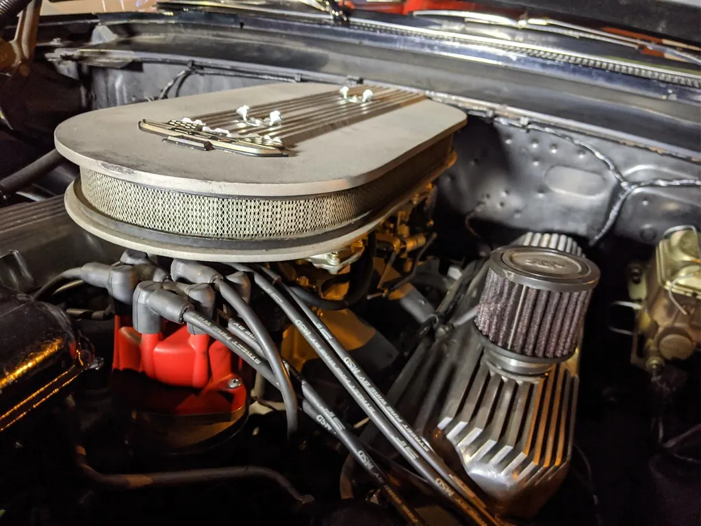

Restoration Basics
Thinking of taking on a project? Plan it with clear eyes. Here is how to think about budget and time, assess a project car, weigh originality against modern upgrades, source parts, and know when to call in a professional.
Whitewall Weekend is an independent educational website and is not affiliated with, endorsed by, or sponsored by any company mentioned.

Safety first: A warning before any hands-on work: never work under a vehicle supported only by a jack. Always use proper jack stands on firm, level ground, and chock the wheels. Work in a well-ventilated space, keep fire extinguishers handy around fuel, let a hot engine cool before touching it, and wear eye protection. For brakes, fuel systems, and any job you are unsure of, consult a qualified mechanic. These cars are wonderful, but they demand respect.
From dream to plan
Restoring a classic car is one of the hobby's deepest pleasures, but it is also where enthusiasm most often outruns good sense. The single best advice anyone can give is this: plan the whole project, honestly and on paper, before you buy a single car or part. A clear-eyed plan is what separates the restorations that get finished and enjoyed from the sad, half-done projects that languish under a tarp for years.
Begin by asking yourself what you truly want. A show-winning concours restoration, a reliable weekend driver, or a gentle tidy-up of a decent survivor? These are very different projects in time, skill, and money, and being honest with yourself at the start saves a world of frustration later.
Thinking honestly about budget and time
Restoration almost always costs more and takes longer than first expected — ask anyone who has done it. The wise approach is to estimate generously and then add a margin on top.
- The purchase is often the smallest part of the cost. A cheap project car can be the most expensive of all if it needs everything.
- Parts for a popular model are widely available; for a rare one, they can be costly and hard to find. Research this before you buy.
- Labor is the big variable. Work you do yourself costs only time; work farmed out to professionals — especially bodywork and paint — adds up quickly.
- Time is real, too. A full restoration can take years of weekends, so be sure you have the space and the patience.
Tip: A good rule many veterans swear by: buy the best car you can afford to begin with. A sound, complete car that needs tidying almost always ends up cheaper and more satisfying than a cheap wreck that needs everything.
Assessing a project car
When you look at a potential project, look past the shiny paint and the running engine, which are the easy things. The real enemy, and the most expensive to fix, is rust.
- Inspect the body for rust, especially in the lower panels, floors, trunk, and any hidden pockets where water collects. Bring a flashlight and, with permission, a small magnet (which will not stick firmly over thick filler hiding rust).
- Check that the car is complete. Missing trim, badges, and interior parts can be very hard and costly to replace.
- Look underneath for the condition of the frame or floor structure; serious rot here is a major, expensive job.
- Note what works and what does not, but remember mechanical parts are usually easier and cheaper to sort than bodywork.
- If you can, take a knowledgeable friend or pay a specialist for a pre-purchase inspection — the best money you can spend.
Original, or restomod?
One of the hobby's great friendly debates is whether to keep a car strictly original or to blend in modern improvements — a "restomod." There is no wrong answer, only what suits you and the car.
A faithful original restoration preserves the car exactly as it left the factory, down to the correct paint colors, materials, and mechanical details. It honors history, tends to be prized by purists and judges, and is deeply satisfying to those who love authenticity. A restomod keeps the classic looks but adds modern touches — perhaps updated brakes, more comfortable seats, or improved cooling — to make the car safer, more reliable, and more pleasant to drive every day.
Consider how you will use the car. A trailered show piece leans toward originality; a car you want to drive and enjoy on modern roads may be happier with a few sensible, reversible upgrades. Whatever you choose, keep any work tasteful and, ideally, reversible, so the car's history is never lost. And keep everything legal and safe — we do not cover modifications that defeat emissions equipment or compromise safety.
Finding parts responsibly
Half the adventure of a restoration is the hunt for parts, and the classic-car world is wonderfully well served. Reproduction parts for popular models, specialist suppliers, club spares, swap meets, and online enthusiast communities can turn up almost anything with patience. Buy from reputable sources, keep your receipts, and build relationships with the specialists for your particular make — their knowledge is often worth more than the parts themselves.
Keep a detailed file of everything you do and buy, with photographs of the car before, during, and after. This documentation is invaluable: it guides reassembly, it proves the quality of the work, and it adds real value and interest when the time comes to show or pass on the car. A well-documented restoration tells a story, and that story is part of what makes these cars so treasured.
A safe, comfortable workspace
Good work needs a good place to do it. You do not need a professional shop, but a few basics make the whole project safer and far more pleasant. A dry, well-lit garage or carport, a sturdy workbench at a comfortable height, and good ventilation are the foundations. Add proper lighting — our eyes need more of it as we age, and good light prevents both mistakes and injuries — and a comfortable stool or creeper so you are not kneeling on cold concrete for hours.
Safety first: Fumes, fuel, and a raised car are the three great dangers of home restoration. Never run an engine in a closed space, keep fuel and solvents away from any flame or spark, and — we cannot say this often enough — never, ever get under a car supported only by a jack. Proper jack stands on firm, level ground are not optional; they are the difference between a hobby and a tragedy.
Patience and the long game
If there is one quality a restoration demands above all, it is patience. These projects unfold over months and often years, in a rhythm of small victories and occasional setbacks. The owners who enjoy the journey — who treat each evening in the garage as the point rather than a means to an end — are the ones who finish, and the ones who are happiest doing it. Those who only want the finished car tend to burn out somewhere in the middle, under the tarp with the half-done bodywork.
So pace yourself. Set small, achievable goals, celebrate each one, and do not measure your progress against the glossy magazine builds done by full-time professionals with unlimited budgets. Your restoration is yours, on your timetable, within your means, and every bolt you turn is part of the pleasure. Take breaks when you need them, ask for help without shame, and keep your eye on the simple joy of it. The destination — that first drive in a car you brought back to life — is worth every patient hour, and so, you will find, is the road there.
Celebrating the finish — and the journey
There is no feeling in the hobby quite like the first drive in a car you have brought back to life. After months or years of patient work, the engine catches, the car rolls out into the sunshine, and every scraped knuckle and late night suddenly seems worth it. Savor that moment; you have earned it, and you have created something that will give pleasure for decades to come.
But do not let the finish line be the only prize. The truth most veteran restorers come to know is that the journey was the real reward all along — the quiet evenings in the garage, the puzzles solved, the skills learned, the friends made along the way. A restoration is a hobby, not a race, and the happiest restorers are those who enjoyed every mile of the road to the finish. So take photographs, keep your logbook, and one day show the car with pride, telling anyone who asks the long and satisfying story of how it came to be. That story, as much as the car, is what you built.
Knowing when to call a professional
Doing the work yourself is the heart of the hobby for many, but not every job is a do-it-yourself job, and there is no shame in hiring out the parts that need a professional. High-quality paint and bodywork require skill, equipment, and a proper booth that few home garages can match. Brakes, fuel systems, and any safety-critical work should be done or checked by a qualified mechanic. Upholstery, chrome plating, and machine work on an engine are specialist trades for good reason.
A smart restorer does the jobs they can do well and enjoy, and gladly pays an expert for the rest. The result is a safer, better car and a far more pleasant journey getting there. When your project is finished — or between stages — the Care & Storage guide will keep it in fine fettle.